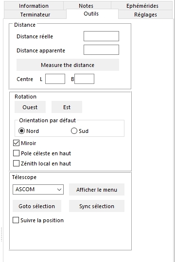

Atlas Virtuel de la Lune
Guide rapide d'utilisation
Les exemples qui suivent vont vous permettre de bien utiliser l' "Atlas Virtuel de la Lune" et vous donner toutes les indications pour le configurer. Les versions compatibles avec les actions décrites sont indiquées :
Bien configurer l' "Atlas Virtuel de la Lune"
Voir la Lune à une date et une heure donnée pour préparer une observation
Trouver une formation lunaire inconnue dont vous venez d'apprendre l'existence
Trouver une formation lunaire inconnue avec un monture "Goto"
Etudier
une formation connue et connaître ses possibilités d'observation
Rechercher une formation de la zone de libration
et la prochaine date d'observation
Voir une formation dans son contexte géologique
Générer des documents utilisables sur le terrain
Etudier la face cachée de la Lune
Etudier scientifiquement la Lune
Etudier une catégorie précise de formations lunaires
Bien configurer l' "Atlas Virtuel de la Lune"
Une bonne configuration de l' "Atlas Virtuel de la Lune" est nécessaire pour tirer le meilleur parti de ses possibilités.
Les auteurs ont souhaité que ce logiciel soit utilisable par le plus grand nombre malgré les ressources "machine" qu'il demande. C'est pourquoi, il y a des réglages préalables à effectuer .
Les possesseurs de machines plus puissantes auront directement accès à toutes les fonctions. Plus le microprocesseur est rapide et plus la carte graphique est pourvue en mémoire, meilleure sera la résolution des cartes et les calculs quasi instantanés.
1) Réglages préalables
Le "Panneau de Configuration" est géré dans le module "ATLUN".

Une fois le module ATLUN lancé, cliquez sur le menu "Configuration". Cliquez sur l'onglet "Général". Rentrez les coordonnées de votre site d'observation, ce qui inclura le calcul de la libration diurne.
Cochez la case "Utiliser la date et l'heure de l'ordinateur".
Choisissez ensuite la langue utilisée. L'anglais et le français livrés avec la version de base concerne le programme et l'ensemble des bases de données. Dans les autres langages produits par d'autres collègues bénévoles, il s'agit généralement de l'interface du programme seulement. Des base de données ont également été traduites aussi, mais seulement dans certaines langues.
Cliquez sur l'onglet "Databases" .

Il suffit de cocher les cases correspondants aux bases que vous souhaitez afficher simultanément.
Attention : plus vous sélectionnez simultanément de bases de données, plus le module doit gérer un grand nombre de formations. Ainsi, quand vous sélectionner les bases "Salamuniccar" ou "Robbins", ce nombre de formations peut dépasser le million ! Ceci va ralentir forcément les performances de l'affichage des cartes.
Dans le cadre "Bases de données personnelles de DATLUN" figurera vos propres bases de données quand vous les aurez transféré dans l'AVL grâce au module DATLUN.
Cliquez ensuite sur l'onglet "Affichage".

Vous pouvez cocher les cases "Afficher la phase" et/ou "Afficher la libration" si vous le souhaitez.
Vous pouvez appliquer la couleur que vous souhaitez pour le point marquant la formation sélectionnée, le nom de la formation sélectionnée et les noms des autres formations principales au voisinage. Vous pouvez aussi décider de leur affichage en cochant ou décochant les cases "Affiche les labels" et "Affiche les marques".
En cochant la case "Marque la libration maximum", une flèche bien visible s'affichera autour du disque lunaire pour vous indiquer l'endroit où la libration sera maximale pour la date et l'heure que vous avez choisi. Vous noterez à l'usage que la taille de cette flèche est proportionnelle à l'intensité de la libration.
Le curseur "Taille des marques" vous permet de grossir ou diminuer la taille de la flèche de libration et le point marquant la formation sélectionnée.
Si vous cochez la case "Label centré sur la formation", le label masquera davantage la formation, mais sera placé directement dessus.
Il est recommandé de cocher la case "Label court" si vous utilisez les bases de données "Formations satellites" ou "Formations non nommées" afin de ne pas encombrer l'affichage de la carte, vu le nombre de formations répertoriées dans ces bases.
Vous pouvez choisir la police de caratères des labels en cliquant sur le bouton "Police des labels".
Il vous faudra sans doute effectué plusieurs essais couplés avec la
densité des labels et leur couleur pour trouver l'affichage qui vous
convient le mieux.
Le curseur "Densité de label" vous permet d'augmenter ou de réduire le nombre de noms de formations affichés en même temps sur la carte.
Cliquez ensuite sur l'onglet "Textures".

Les trois cases alternatives à cocher "Phase avec relief", "Phase sans relief" et "Pas de texture" servent à choisir l'activation ou non de l'affichage dynamique des ombres au niveau du terminateur lunaire. Si votre ordinateur n'a pas une carte graphique très performante, cochez "Phase sans relief" et limitez vous à utiliser les textures "Relief aérographe avec ou sans albedo" ou les autres textures seulement aux niveaux 1 à 8.
Cet onglet présente ensuite une matrice de sélection des textures en fonction du niveau de zoom appliqué. Cette fonctionnalité rend extrêmement souple l'affichage des textures.
Vous pouvez ainsi choisir de garder une seule des textures proposées sur la totalité du zoom ou sélectionner comme ci-dessus un changement progressif de résolution des textures en fonction du niveau de zoom. Il suffit de cocher le bouton radio souhaité. Il ne peut y avoir qu'une seule texture cochée par niveau de zoom.
Pour ne pas voir de texture affichée, cochez la case « pas de texture / A utiliser avec un overlay seul»
Il est conseillé d'utiliser des textures avec une résolution augmentant au fur et à mesure que le niveau de zoom augmente. Il y a 6 niveaux de résolution de textures. Le logiciel charge les niveaux que vous avez indiqués ci-dessus en fonction du zoom appliqué à la carte :
Les textures « Aérographe » n’ont que 2 niveaux
La texture "Unified geological map" va jusqu'au niveau 3
Les textures LRO, LOPAM, LRO-Kaguya et Chang’é 2 disposent de 6 niveaux..
Les textures "Aérographe avec albedo" et "Aérographe sans albédo" ont 3 niveaux.
Les textures "Clementine photographique" et « Chang’é 2 photographique » servent à montrer l'aspect des formations sous l'éclairage solaire le plus haut possible.
La texture "LRO-Kaguya shaded" est particulièrement adaptée pour l'affichage des couches scientifiques.
Si vous souhaitez afficher une carte historique, la case à cocher "Historiques" donne accès à une liste déroulante des textures "historiques" gérées par l'AVL.

Cliquez ensuite sur l'onglet "Couches"

L'AVL comporte la possibilité d'appliquer au dessus de la texture choisie dans l'onglet "Textures", une couche dont on peut régler la transparence pour continuer à voir en dessous la texture.
Les textures "Aérographe sans albedo" et "LRO - Kaguya - Shaded" sont recommandées pour l'application des couches scientifiques en fonction de la puissance de votre ordinateur. Vous pouvez aussi choisir de ne pas afficher de texture dans l'onglet "Textures" du menu "Configuration" (cf ci-dessus).
Si vous souhaitez afficher une couche, cochez "Affichez la couche" et choisissez en une dans la liste déroulante.
Si vous souhaitez afficher une grille de coordonnées, cochez "Affichez les grilles" et choisissez le "pas" de la grille avec le curseur.
Cliquez maintenant sur l'onglet "Images".

Vous trouvez dedans la liste des répertoires d'images. Vous pouvez ensuite ajouter un répertoire pour vos propres images et ensuite autant que vous voulez pour d'autres sources.
Le bouton "Composants en option" permet au programme de déterminer s'il vous reste des bibliothèques stockées sur le site Web de l'AVL à télécharger.
Cliquez sur l'onglet "Oculaires".

Rentrez l'intitulé de la liste des oculaires que vous possédez. Remplissez la colonne "Champ" en vous aidant avec le bouton "Calcul" au dessus. Nous vous conseillons de classer vos oculaires par ordre de grossissement croissant. En cliquant une ou plusieurs fois dans les colonnes de droite, vous pouvez activer (Vert) ou désactiver (Rouge) les fonctions d'inversion "Droite-gauche" (<->) ou d'inversion "Haut-bas" (N/S). Ainsi si vous possédez un télescope Newton et une lunette, vous pouvez préprogrammer les vues exactes que chacun de ces instruments vous donnera.
Cliquez sur l'onglet "CCD".

Si vous possédez une camera ou un boîtier photo que vous souhaitez utiliser pour imager la Lune, rentrez
l'intitulé de ces dispositifs. Remplissez les colonnes
"Largeur" et "Hauteur" en vous aidant avec le bouton "Calcul"
au dessus.
Cliquez ensuite sur l'onglet "Impression".

Commencez par définir la marge des documents à imprimer. Nous vous conseillons 10 mm pour pouvoir tout faire figurer sur la même page. Le curseur "Largeur du texte d'information" vous permet de choisir la grandeur des caractères de l'impression des informations de la base de données. Nous vous conseillons de faire des essais afin de trouver le bon réglage correspondant à votre imprimante.
Cochez les cases des documents que vous souhaitez ensuite imprimer. Les trois documents peuvent s'imprimer sur la même page si vous avez choisi une taille de caractères suffisamment petite. enfin, nous vous conseillons de cocher la case "Fond blanc" afin de limiter l'utilisation de l'encre lors des impressions des cartes.
Enfin, validez vos choix de configuration en cliquant sur le bouton "OK". Pour certains choix, vous serez obligé de quitter le programme et de le relancer.
2) Réglages complémentaires
Observez le comportement de la carte dans le module ATLUN quand vous zoomez et que vous la déplacez. Est-il erratique, saccadé ? Si oui, il faut affiner les réglages.
Cliquez alors sur l'onglet "Réglages"
à droite de l'écran.

Celui-ci comporte un outil intéressant pour la configuration finale. En bas du cadre, vous voyez un compteur d'images par secondes (fps) appelé "Rafraichissement". Plus ce chiffre est élevé, plus l'affichage est fluide.
Faites glisser le curseur "Pénombre"
et choisissez le degré de transparence de celle-ci qui vous plaît
le mieux. Mais sachez que l'affichage est un peu plus rapide quand la
partie obscure est complètement noire. Il permet en outre de simuler le phénomène de la "Lumière Cendrée".
Faîtes glisser l'onglet "Diffus". Il gère la qualité générale du rendu de la carte.
Faîtes glisser l'onglet "Direct". Il gère la largeur du flou de l'éclairage au niveau du terminateur. L'affichage gagne en rapidité s'il est positionné à gauche et en résolution s'il est positionné à droite.
Mais le réglage qui influe le plus sur la fluidité de l'affichage
est celui réglé par le curseur "Résolution".
Ce curseur sert à gérer la précision de la sphère
3D sur laquelle est appliquée la texture et la couche. Placé
totalement à gauche, ce n'est même plus une sphère,
mais un polyèdre à facettes.
En déplaçant le curseur vers la droite, vous augmentez
le nombre de ces facettes, mais ce réglage devient aussi de plus
en plus gourmand en ressources matérielles. Il vaut mieux néanmoins
aller vers une résolution sphérique plus grande car cela
influe sur la précision du pointage des formations sur la carte
3D.
Il vous faut maintenant jouer sur ces différents curseurs pour obtenir un compromis acceptable entre définition et fluidité. Il est déconseillé de descendre en dessous d'un taux d'affichage de 4 fps car celà risque de bloquer l'ordinateur.
Si vous connaissez bien l'Open GL, vous pouvez aussi essayer les réglages permis par les deux cases à cocher "Compression des textures" et "Anti-Alias". Il vous faudra alors redémarre le programme pour qu'ils soient pris en compte.
Cliquez sur l'onglet "Outils" à
droite.

Cochez la case "Sud" du cadre "Orientation par défaut" si vous utilisez un télescope Newton pour que l'affichage soit orienté comme la vue dans ce type de télescope. Ou sinon cochez les case s "Nord" et "Miroir" si vous utilisez une lunette ou un télescope Maksutov ou un télescope Schmidt - Cassegrain. Si aucune de ces deux cases n'est cochée, la Lune sera représentée telle qu'elle est vue à l'oeil nu ou aux jumelles.
Une fois ces réglages effectués, vous pouvez utiliser l'Atlas
Virtuel de la Lune en toute efficacité !
Bonne observation à vous !
Voir l'aspect de la Lune à une date et une heure donnée pour préparer une observation
Vous souhaitez connaître l'aspect de la Lune pour un prochain jour afin de préparer une observation. Cela peut être pour deux raisons :
- Vous souhaitez observer le "Ciel Profond" et la présence de la Lune est plutôt indésirable.
- Vous souhaitez observer la Lune et connaître les
formations qui se trouveront sur le terminateur.
Au lancement du programme, la fenêtre "Carte"
affiche un véritable globe lunaire en 3D. Si vous ne l"avez pas
encore fait, allez dans le menu "Configuration" et cochez les cases "Phase"
et "Libration". Validez par "OK". Vous pouvez aussi cliquer sur les boutons "Phase"
et "Libration" de la barre des boutons en haut.
Une fois le programme lancé et affiché, cliquez sur l'onglet "Ephémérides".
- S'il s'agit d'une observation immédiate, cliquez sur le bouton "Maintenant" et le programme se synchronisera sur la date "Système" de votre système d'exploitation.
- S'il s'agit d'une observation future, régler la date et l'heure avec les cases supérieures et cliquez sur le bouton "OK".
Le globe lunaire montre maintenant la phase et la libration pour la date et l'heure que vous avez choisies.
Vous avez accès dans le cadre inférieur à toutes les données chiffrées nécessaires.
Ensuite, cliquez sur l'onglet "Terminateur".
Dans la fenêtre inférieure, vous avez accès à la liste des formations situées près du terminateur.
Vous pouvez limiter cette liste aux formations selon leur intérêt d'observation en choisissant le degré de celui-ci dans la liste déroulante supérieure. Vous pouvez également réduire cette liste aux formations facilement observable dans votre instrument en choisissant celui qui se rapproche le plus du vôtre dans la liste déroulante "Instrument".
Vous pouvez également classer cette liste adaptée à vos besoins selon le nom, la latitude de la formation en cochant la case correspondante.
Cliquez maintenant sur la première formation de la liste et vous voyez s'afficher sa position sur le disque lunaire. En descendant ensuite dans la liste avec les touches fléchées de votre clavier, vous pourrez ainsi situer la position des autres formations et préparer votre séance d'observation si c'est le cas.
Trouver une formation
lunaire inconnue dont vous venez d'apprendre l'existence
Vous venez de découvrir dans une revue ou un ouvrage traitant de la Lune, l'existence d'une formation lunaire intéressante dont vous ignoriez l'existence. L'Atlas Virtuel de la Lune va vous indiquer sa position.
Lancer le module ATLUN. Nous choisirons pour notre exemple "Mons Rümker" que votre nouvelle source d'information vient de vous révéler.
Cliquez sur l'onglet "Information". Dans la zone de saisie "Recherche" en bas du cadre, tapez en majuscules, et sans accent, ni tréma :
MONS RUMKER
Puis cliquez sur le bouton "Recherche". Dans les secondes qui suivent, vous voyez s'afficher la position de Mons Rümker au Nord-Ouest du disque lunaire.
Notez que cette fonction de recherche est très puissante car vous pouvez utiliser les "jokers" : *. Ainsi, si vous avez tapé :
MONS*
vous pouvez voir la position de toutes les formations dont le nom officiel contient "MONS". Il suffit de cliquez sur le bouton "Suivant" pour les afficher une par une.
Trouver sans recherche
une formation lunaire inconnue dont vous venez d'apprendre
l'existence avec
une monture "Goto"
Vous venez de découvrir dans une revue ou un ouvrage traitant de la Lune, l'existence d'une formation lunaire intéressante dont vous ignoriez l'existence. Si vous possédez une monture informatisée "Goto" qui accepte notamment le protocole ASCOM, l'AVL va vous positionner directement dessus sur la Lune.
Veillez a installer la dernière version des drivers ASCOM depuis
Connectez votre monture à l'ordinateur.
Démarrez votre ordinateur et le module ATLUN. Allez dans l'onglet "Outils" à droite
Puis utiliser la raquette ou un programme de planétarium pour
pointer la Lune.
Cliquez sur le bouton « Afficher le menu » et
lancez la connexion.
Commencez par centrer une formation bien reconnaissable dans l'oculaire,
et sélectionnez là sur la carte. Appuyez sur « Sync
sélection » pour initialiser les coordonnées
du télescope à cette position. Il est également possible
de faire cette opération sur une étoile proche de la Lune
avec le programme de planétarium.
Cochez ensuite « Goto sélection » pour que la carte affiche toujours la position du télescope.
Si votre télescope est capable d'un pointage automatique vous pouvez maintenant cliquer sur une formation sur la carte, ou la choisir avec la fonction « Recherche » de l'onglet "Information", puis cliquer sur le bouton « Goto sélection ».
Etudier une formation
connue et connaître
ses possibilités d'observation
Vous avez envie d'observer une formation qui vous intéresse particulièrement ou vous venez de découvrir dans une revue ou un ouvrage traitant de la Lune, l'intérêt de cette formation lunaire intéressante . L'AVL va vous indiquez toutes les informations qu'il contient à ce sujet et quand vous pourrez l'observer bien.
Lancer le programme. Nous choisirons pour notre exemple "Alphonsus", un cratère bien connu pour lequel votre nouvelle source d'information vient de vous révéler un intérêt particulier.
Comme vous connaissez bien Alphonsus, vous glissez le curseur zoom au milieu. Vous pouvez aussi utiliser la molette de votre souris si elle en possède une. Le carte de la Lune grossit.
Vous cliquez dedans avec le bouton gauche et, en restant appuyé, vous déplacez la souris pour déplacer simultanément la carte afin de centrer Alphonsus. Il est visible maintenant et vous cliquez en son centre. Son nom s'affiche sur la carte, vous confirmant que vous ne vous êtes pas trompé de cratère. Sinon, il vous suffit de lancer la recherche décrite dans l'exemple précédent pour le trouver facilement.
Dès qu' Alphonsus est identifié, cliquez sur e bouton "Centrer". Alors, la carte vous montre qu'il s'agit d'un cratère plutôt jeune avec un pic central et des murailles conséquentes.
Vous pouvez prendre connaissance des informations plus détaillées
le concernant dans la fenêtre "Information" à droite. Vous y trouverez
des informations sur l'origine de son nom, sur sa position, ses dimensions,
une description complète, des conseils d'observation et les données officielles de l'Union Astronomique Internationale (IAU)
Notez aussi le cadre "Profil" au dessus de la fenêtre qui vous vous donne une idée de la coupe de ce cratère.
Pour mieux comprendre la description, cliquez sur le bouton "Image" dans la barre des boutons. Cela valancer le module PHOTLUN. Une bande de photographies de cette formation disponibles dans les bilbiothèques d'images de l'AVL que vous avez installées est affichée. Ces photos vous montrent un luxe de détails dépassant ce qui est visible dans les meilleurs instruments terrestres. Cliquez sur la photo que vous choisissez d'afficher et elle apparaît dans une fenêtre indépendante.
Vous pouvez agrandir ou diminuer cette image en cliquant sur les boutons "Zoom +" et "Zoom -" qu'elle comporte. Vous pouvez aussi régler le contraste et la luminosité. Les ascenseurs vous permettent de la faire défiler si elle est trop grande.
Les photos montrent bien les taches noires, le pic central et les rainures
d'Alphonsus qui sont indiquées dans la description du cratère et même
plus si vous voyez tous les craterlets visbles à l'interieur.
Rechercher une formation de la zone de libration et la prochaine date d'observation
Découvrons maintenant une importante facette de la puissance de l' "Atlas Virtuel de la Lune". Il s'agit de rechercher une formation située dans la zone des librations et qui n'est que périodiquement visible. Nous utiliserons pour cet exemple la mythique "MARE ORIENTALE"... qui n'est d'ailleurs plus à l'Est, mais maintenant à l'Ouest depuis que l' Union Astronomique Internationale a définitivement fixé les points cardinaux lunaires.
Lancer le module ATLUN. Cliquez sur l'onglet "Information". Dans la zone de saisie "Recherche" en bas de l'onglet, tapez en majuscules, et sans accent, ni tréma :
MARE ORIENTALE ou *ORIENT*
Puis cliquez sur le bouton "Recherche". Dans les secondes qui suivent, vous voyez s'afficher la position de Mare Orientale au Sud-Ouest du globe lunaire en 3D, peut-être au delà du bord.
Vous glissez le curseur Zoom au milieu. Le globe de la Lune grossit.
Vous cliquez dedans avec le bouton gauche et, en restant appuyé, vous déplacez la souris pour déplacer simultanément le globe afin de centrer Mare Orientale.
Vous pouvez prendre connaissance des informations plus détaillées la concernant dans la fenêtre "Information" droite. Vous y trouverez des informations sur l'origine de son nom, sur sa position, ses dimensions, une description complète, des conseils d'observation, et les données officielles de l'Union Astronomique Internationale (IAU)
Pour mieux comprendre la description, cliquez sur le bouton "Image" dans la barre des boutons. Cela valancer le module PHOTLUN. Une bande de photographies de cette formation disponibles dans les bilbiothèques d'images de l'AVL que vous avez installées est affichée. Ces photos vous montrent un luxe de détails dépassant ce qui est visible dans les meilleurs instruments terrestres. Cliquez sur la photo que vous choisissez d'afficher et elle apparaît dans une fenêtre indépendante.
Vous pouvez agrandir ou diminuer cette image en cliquant sur les boutons "Zoom +" et "Zoom -" qu'elle comporte. Vous pouvez aussi régler le contraste et la luminosité. Les ascenseurs vous permettent de la faire défiler si elle est trop grande.
Cette image vous montre Mare Orientale d'une façon impossible depuis la Terre. Mais comment la voit-on "au mieux" depuis la Terre ? Fermer tout d'abord l'image pour récupérer la totalité de la fenêtre "Carte".
Cliquez sur le menu "Configuration", puis l'onglet "Affichage" et activez les cases à cocher "Phase" et "Libration".
Cliquez sur l'onglet "Ephémérides" et à l'aide du bouton ">>" avancer dans le temps à raison de 1 jour par clic.
Vous verrez alors le lent balancement du globe lunaire en accéléré, ainsi que la succession du passage des terminateurs. Notez aussi la flèche qui vous indique sur le pourtour du globe lunaire l'endroit où la libration est maximale et comment sa taille varie en fonction de l'intensité de la libration.
Observez comment Mare orientale devient de temps à autre plus largement visible. Une bonne période d'observation se situe avec une libration favorable et un jour de Pleine Lune. Après le nombre de clics suffisant, la date des cases de la fenêtre éphémérides vous indique la prochaine bonne période. Celles-ci sont rares et il reste à espérer que ce soir là, vous serez libre et que la météo sera bonne !
Vous pouvez aussi comtempler Mare Orientale comme si vous étiez en orbite autour de la Lune, juste au dessus d'elle. Pour cela, cliquez sur le bouton "Globe entier" et sur le bouton "Centrer" dans la barre des boutons. Et vous disposez maintenant d'une vue impossible depuis la Terre !
Voir une formation dans son contexte géologique
Vous pouvez aussi grâce à l'Atlas Virtuel de la Lune obtenir des renseignements sur la nature géologique des formations et sur les terrains qui les entourent.
Allez dans le menu "Configuration". Sélectionnez l'onglet "Textures". Rechercher la texture "Unified Geologic map" dans la matrice et sélectionnez là. Vous pouvez cocher les niveaux de zoom 1 à 8. Cliquez sur le bouton "OK". La carte géologique s'affiche. Nous vous conseillons par ailleurs d'enlever la phase.
Cliquez sur l'onglet "Information". Dans la zone de saisie "Recherche" en bas, entrez le nom de la formation cherchée. Appuyez sur le bouton "Recherche".
La formation est alors indiquée sur la carte. Dans la barre des boutons, bougez le curseur "Zoom" pour grossir la carte comme vous le souhaitez. Appuyez sur le bouton "Centre" pour centrer la formation choisie dans la fenêtre "Carte".
Cliquez sur l'onglet "Informations" à droite pour lire les données relatives à la géologie de la formation.
Générer
des documents utilisables sur le terrain
L'Atlas Virtuel de la Lune vous permet de générer des documents imprimés, utilisables sur le terrain, "à l'oculaire".Comment procéder ?
Dans l'onglet "Impression" du menu "Configuration", vous pouvez choisir la largeur des marges du document à imprimer, la taille des caractères de la fiche d'information et la nature des documents à imprimer.
Les deux plus importants sont la carte permettant de trouver une formation et la fiche d'informations sur ladite formation. Cochez donc les deux cases correpondantes. Sachez que les deux documents pourront être imprimés sur la même page si vous n'avez pas choisi une taille de caractères trop grande.
Dans l'onglet "Affichage" du menu "Configuration", Bougez le curseur "Taille des labels" pour augmenter la taille des noms imprimés et les rendre plus lisibles à l'impression. Il vous faudra sans doute faire plusieurs essais avec différentes tailles et densité de labels pour arriver à un compromis acceptable.
Nous vous recommandons également de choisir les couleurs blanche ou noire pour les marques et labels si vous possédez une imprimante noir et blanc.
Cliquez ensuite sur l'onglet "Outils". Cochez la case "Miroir" et la case "Nord en haut" pour avoir une carte lunaire telle que la Lune est orientée dans votre lunette, ou votre télescope du type Cassegrain, Schmidt-Cassegrain ou Maksutov.
Par contre, si vous possédez un télescope du type "Newton", ne cochez pas la case "Miroir" et cochez la case "Sud en haut".
Choisissez ensuite le facteur de grossissement. Au rapport 1:1, la carte montre l'image entière de la Lune telle qu'elle est visible avec un grossissement de 100 fois environ, c'est à dire remplissant presque totalement le champ d'un oculaire classique.
A l'aide du menu contextuel lié au clic droit de la souris sur la carte, vous pouvez mettre en route le "zoom X2" qui correspond à un grossissement de x200 environ ou le "zoom X4" qui vaut approximativement un grossissement de 400 fois.
Ouvrez ensuite le menu "Fichier". Configurez votre imprimante à l'aide du choix "Sélection d'imprimante". Choisissez l'imprimante dans la liste déroulante supérieure, ainsi que le mode d'alimentation. Nous vous conseillons d'opter pour le format "Portrait". Puis cliquez sur le bouton "OK" pour enregistrer les choix.
Ré-ouvrez le menu "Fichier" et choisissez l'option "Imprimer" pour envoyer à l'impression les documents que vous avez choisis.
Vous disposez maintenant d'un document utilisable "sur le terrain" sans avoir besoin d'un ordinateur sur place.
Etudier la face cachée
Il vous est possible de visualiser la face cachée de notre satellite.
Pour celà, il suffit d'appuyer sur le bouton "Globe entier" dans la barre des boutons en haut.
Dans ce mode "Globe entier", c'est le fonctionnement de la souris et des ascenseurs de la fenêtre "Carte" qui changent.
La souris sert à faire tourner le globe lunaire sur lui-même et les ascenseurs servent uniquement à centrer la région souhaitée.
Vous pouvez donc faire tourner le globe et aller voir le relief de la face cachée. Si dans l'onglet "Bases de données" du menu "Configuration", vous avez coché "Formations nommées de la face cachée", les noms des formations de la face cachée seront indiqués comme sur la face visible et vous aurez accès aux informations les concernant dans la fenêtre de l'onglet "Informations" à droite.
Se prendre pour un astronaute
Avec l'AVL, il vous est possible d'avoir une idée du spectacle que les astronautes des missions "Apollo" pouvait contempler en orbite autour de la Lune.
Allez dans l'onglet "Affichage" du menu "Configuration" et décochez les cases "Affiche les labels", "Affiche les marques" et "Marque la libration maximale" afin de ne pas obstruer le paysage. Mais vous pouvez aussi les laisser cochées pour reconnaître les formations survolées.
Ouvrez l'onglet "Textures" and choisissez soi la texture "LRO WAC mosaïque".
Il suffit ensuite d'appuyer sur le bouton "Globe entier" dans la barre des boutons du haut.
Dans ce mode "Globe entier", c'est le fonctionnement de la souris et des ascenseurs de la fenêtre "Carte" qui changent.
La souris sert à faire tourner le globe lunaire sur lui-même et les ascenseurs servent uniquement à centrer la région souhaitée.
Cliquez sur l'onglet "Outils" à droite et cliquez sur les boutons de rotation du globe "Est" et "Ouest" pour incliner le globe lunaire comme vous le souhaitez. Le plus spectaculaire est avec l'équateur vertical.
Faîtes un clic droit et sélectionner votre oculaire le plus puissant à partir du menu contextuel apparu. Le cache rond apparaît, simulant un "hublot" de cabine spatiale. Utiliser les ascenseurs de la fenêtre carte pour vous positionner au bord du globe ou utilisez les boutons "Vue Est", "Centre" ou "Vue Ouest" du cadre "Satellisation" pour choisir la région souhaitée.
Sélectionnez la vitesse de satellisation souhaitée dans la liste déroulante et cliquez sur "<" ou ">" pour choisir le sens du mouvement. Le bouton " II " sert à l'arrêter pour permettre l'affichage des noms de formations.
Refaîtes un clic droit et sélection à partir de l'option "Rotation" la vitesse que vous souhaitez. Et maintenant profitez du spectacle et rêvez un peu...
Voir une formation dans un contexte scientifique
Vous pouvez aussi visualiser la répartition d'éléments sur la surface lunaire ou visualiser des données topographiques sur la totalité du globe lunaire.
Allez dans le menu "Configuration". Sélectionnez l'onglet "Couches". Mettez une coche dans la case " Afficher la couche " et choisissez la couche scientifique qui vous interesse dans la liste déroulante. Réglez la transparence de la couche avec le curseur. Cliquez sur le bouton "OK". Nous vous conseillons par ailleurs d'enlever aussi la phase en cliquant sur le bouton "Phase" et la libration avec le bouton "Libration" dans la barre des boutons en haut. Vous pouvez aussi avoir accès à la Face cachée en appuyant ensuite sur le bouton "Globe entier".
En appuyant sur le bouton "Fenêtre 2", vous pouvez faire apparaître une nouvelle fenêtre et régler l'affichage avec une autre couche scientifique, vous permettant ainsi de mener des études comparatives particulièrement enrichissantes.
Etudier une catégorie précise de formations lunaires
Avec "DATLUN" (c), le gestionnaire de données de l'AVL, vous pouvez sélectionner une catégorie précise de formations que vous souhaitez localiser pour les étudier.
Patrick Chevalley a choisi de baser DATLUN sur le langage SQL pour qu'il puisse générer des requêtes multicritères très élaborées.
De plus, les informations rentrées dans les bases de données par Christian Legrand sont dès le départ "calibrées" afin de permettre des recherches très précises.
La conjonction de ces deux facteurs vous permet de sélectionner par exemple des listes du type de :
- Les rainures de plus de 5 km de large visibles 2 jours après
le Premier Quartier.
- Les cratères à pic central compris entre 20 et 30 km de
diamètre (Zone d'apparition du phénomène)
- Les cratères à fond plat rempli de lave sombre bien visibles
dans un instrument de 50 mm de diamètre
- Les formations de la carte n° 33 de " l'Atlas de la Lune"
de Antonin Rükl ou de la page 158 de l'Atlas photographique de Viscardy
- Les formations présentes sur la planche LOPAM IV-108-H2 autour
d'Alphonsus
- Les formations de la période ératosthénienne.
- etc...
De plus, la fonction "Marque la sélection sur la carte" lancera l'AVL avec toutes les formations que vous aurez sélectionnées localisées clairement.
Nous vous invitons à vous reporter à la documentation illustrée de "DATLUN" pour plus d'informations
Avec "DATLUN" (c), le gestionnaire de données de l'AVL, vous pouvez également effectuer des études sur la toponymie lunaire.
Patrick Chevalley a choisi de baser DATLUN sur le langage SQL pour qu'il puisse générer des requêtes multicritères très élaborées.
De plus, les informations rentrées dans les bases de données par Christian Legrand sont dès le départ "calibrées" afin de permettre des recherches très précises.
La conjonction de ces deux facteurs vous permet de sélectionner par exemple les formations nommées dont le nom est tiré de personnages ayant les mêmes particularités, par exemple :
- Les personnages qui ont vécu au 18ème siècle
- Les personnage qui sont des mathématiciens ou des physiciens
français (ou de toute autre nationalité)
- Les personnages qui ont fait des recherches sur la lumière
- Les cratères dont les noms de personnages ont été
attribués par Schmidt
- Les personnages qui sont nés dans une ville donnée
- Les formations présentes sur la carte de Langrenus.
- etc...
C'est la première fois qu'un tel outil est proposé aux observateurs lunaires.